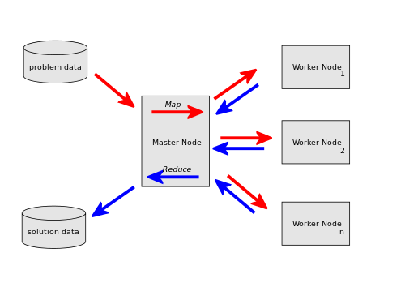

Introduction
Learning Objectives
This project will encompass the following learning objectives:
- Explore a large-scale dataset
- Process a large-scale dataset using MapReduce
- Use Elastic MapReduce to run a MapReduce job on the cloud
- Understand the benefits of frameworks such as MapReduce to analyse large volumes of data
In this part of the Project, we will be processing a much larger portion of the dataset. Using similar filtering techniques used in the previous part, we will aggregate all the data about the page views for all of November 2014.
Further Analysis of the Data
Processing a single file sequentially like we did in the previous page does not really answer the question of "What was the most popular page for the month of November 2014" or how many hits did any particular page get on a particular day. To answer this we must:
- aggregate the view counts and
- generate a daily timeline of page views for each article we are interested in
In order to process such a large dataset (~67 GB compressed), we will setup an Elastic MapReduce job Flow. You will have to write a simple Map and Reduce program in the language of your choice.
In this part of the project you will understand some of the key aspects of Elastic MapReduce and run an Elastic MapReduce job flow.
Resource Tagging
For this project, assign the tag with Key: Project and Value: 1.2 for all resources
Warning
Please read the entire write-up carefully before starting an EMR cluster. EMR clusters can be very expensive so make sure you understand fully the requirements of the project before provisioning any resources.
Introduction to MapReduce
The MapReduce programming model, pioneered by Google, is designed to process big data using a large number of machines. In a MapReduce program, data, stored as Key/Value pairs, is processed by a Map function. Mappers output a transformed set of Key/Value pairs, which are subsequently processed by a Reduce function (see Figure 1 Below:).
Figure 1: MapReduce Overview (Image from Wikipedia)
MapReduce was designed to run in large server farms similar to machines that are deployed at Google's data centers and is proprietary. Hadoop is an open-source implementation of Google's MapReduce, which will be covered in detail in the Unit, "Programming Models". Amazon's Elastic MapReduce is a PaaS implementation of Hadoop, and is designed for quick provisioning of Hadoop clusters and fast transfers to/from S3. In this part of the project you will understand some of the key aspects of Elastic MapReduce and run an Elastic MapReduce job flow.
MapReduce Resources
We will cover MapReduce in detail in the last Unit of the course. For now, here are several resources to get your started:
- Introductory MapReduce videos from MapR and HortonWorks.
- You can also refer to the Elastic MapReduce Documentation.
Example EMR Job Flow: Wordcount
The following video will walk through the process of writing a Streaming Elastic MapReduce job flow using Python and Java:
Video: Introduction to AWS
In the example explained in the video above, the map phase Word Count takes a directory of text input files, scans through all of them, outputting a single word (key) and the number "1" (value) per each line. The aggregate reducer takes input, line-by-line, from all the mappers and sums each instance of that Key/Value pair. The final output is a list with each word, and the number of times that word occurred in all the input files.
You can see the code here
Running the Wordcount MapReduce Job
If you want to try running the Python streaming MapReduce job flow, perform the following steps:
Video: Running a Python Streaming Program on Elastic MapReduce
If you want to try running the Java streaming MapReduce job flow, perform the following steps:
Video: Running a Java Streaming Program on Elastic MapReduce
To recap, the steps you need to follow are:
- In the AWS Management Console, click Services and click on Elastic MapReduce.
- In the Elastic MapReduce view, click Create Cluster.
- At the top of the page, click on Configure Sample Application and select Wordcount.
- Enter an S3 location for your program output folder.
- Make sure logging and debugging is enabled, and click OK.
-
In the
Cluster Configuration
section:
- Enter a name for the cluster.
- Enter an S3 location for your log folder, if you have not already.
- Make sure logging and debugging is enabled.
-
In the
Tag
section:
- Tag your cluster as discussed in the project primer and in the recitation demos.
-
In the
Software Configuration
section:
- Use the AMI 3.3.1(Hadoop 2.4.0) distribution from Amazon.
- There is no need to install any additional applications for this example.
-
In the
Hardware Configuration
section:
- Use the m1.medium instance for both the master and core nodes.
- Specify 2 core nodes.
- There is no need to use any task nodes for this example.
-
In the
Security and Access
section:
- Specify an EC2 keypair that you've already created in the AWS Account Setup page.
- There is no need to add any IAM user access or IAM roles in this example.
- In the Bootstrap Options section, proceed without any bootstrap actions.
- Finally, in the Steps section, you can see a step named "wordcount" has already been configured for you. Click on the edit icon to see the detail of this step. For the purpose of this example, you may use the default input location, or specify your own input to test.
- Set Auto-terminate to No, so that you can log on to your cluster even after the job is finished if you need to debug the job. Make sure you manually terminate your cluster after you are done with the EMR console!
- Review all of your options and click the Create Cluster button after everything looks OK. Remember that after this point, you will be charged for the cluster.
Amazon will then provision a Hadoop cluster with 1 master node and 2 data nodes, and submit the job to it. This takes about 5 minutes to instantiate the virtual machines, configure them, etc. You can monitor your job progress from the console and inspect the output and log S3 locations for information regarding your job.
Writing your own Mappers and Reducers
Now lets get back to processing the wikipedia dataset. In this part you will write your own mappers and reducers to perform the following tasks on the entire 1-month input dataset.
Tasks to Complete
To complete Project 1.2, you need to finish the following tasks:
- Design a MapReduce job flow to:
- Read all the wikimedia entries for November 2014 from
s3://wikipediatraf/201411-gz/ - Filter out elements based on the rules discussed in Project 1.1.
- In addition to what you may have filtered in Project 1.1, there are some malformed entries which need to be filtered. Malformed entries are entries with missing article name. Make sure that you filter these entries.
- Aggregate the pageviews from hourly views to daily views.
- Calculate the total pageviews for each article.
- For every article that has page-views over 100,000, print the following line as output (
\tis the tab character):<total month views>\t<article name>\t<date1:page views for date1>\t<date2:page views for date2> ...
- Getting the input filename from within a Mapper: As the date/time information is encoded in the filename, Hadoop streaming makes the filename available to every map task through the environment variables mapreduce_map_input_file, map_input_file or map.input.file. For example, the filename can be accessed in python using the statement
os.environ["mapreduce_map_input_file"], or in Java using the statementSystem.getenv("mapreduce_map_input_file") - Note: If you are having trouble getting the filename, check the Hadoop version in EMR. If you are using the latest version, the environment variable will be
"mapreduce_map_input_file". In older versions, the variable could be"map_input_file"or"map.input.file"
- Read all the wikimedia entries for November 2014 from
- Once you have designed and tested your MapReduce job flow on a small portion of the dataset, please run it on the entire dataset of November 2014 using Elastic MapReduce.
- Please note the cluster configuration and runtime in minutes of your solution.
- Once the results are ready, launch a t1.micro instance (AMI
ami-08cfb560) to make the submission. - Download your results file from S3 to your AMI.
- Complete the questions asked in
runner.sh. - Submit your answers using
submitter. - SECRET NOTE: First 10 students to reach 100% will get 5% bonus for P1.2GOOD LUCK!!!!
Notes and Suggestions
Controlling Costs
Given that you have a limited budget to do this part of the project, make sure you have thoroughly developed and tested your MapReduce program before launching an expensive EMR cluster. Using Spot instances will allow you to save significantly on EMR clusters. You are allowed to use only upto 20 instances in your cluster, including the master. Note that you are only allowed to use instances that have an on-demand cost less than that of m1.large.
Filtering RulesIf you want to test whether a given line should be retained or removed, please visit this link.
Output RulesThe output should conform to the following output specifications:
- Date should be in
yyyymmddformat. - Dates should be sorted in chronological order. This means that
20141101appears before20141102. - Print out the page views for all dates in a single line.
Here is an example of the output line expected from the reducer:
10 Dopamine 20141101:1 20141102:2 20141103:0 20141104:0 20141105:1 20141106:0 20141107:0 20141108:0 20141109:0 20141110:6 20141111:0 20141112:0 20141113:0 20141114:0 20141115:0 20141116:0 20141117:0 20141118:0 20141119:0 20141120:0 20141121:0 20141122:0 20141123:0 20141124:0 20141125:0 20141126:0 20141127:0 20141128:0 20141129:0 20141130:0
NOTE: Each line must have 30 days, even if there were 0 page views for any particular day. The auto-grader will return 0 if the above format is not maintained.
Troubleshooting EMRThe following video should cover common troubleshooting scenarios for EMR:
Video: Troubleshooting EMR
Grading
After completing the above exercise, you are expected to do some analysis of results and answer certain questions for this week's checkpoint quiz. The checkpoint quiz questions are present in the file /home/ubuntu/Project1_2/runner.sh. You can verify and submit your results using the given auto-grader in the AMI. To use the autograder, do the following:
-
Go to the auto-grader folder located at
/home/ubuntu/Project1_2. -
Download the results of your MapReduce job from S3 to the above folder using s3cmd.
-
Merge the results into a single file called
output. Ensure that the merged results are in descending order of total page views. -
Copy your code to the same folder. If you used Python, name your files
mapper.pyandreducer.py. If you used Java, name your filesMapper.javaandReducer.java. Also ensure that you are not having any package names in your Java files. -
The auto-grader consists of three files,
runner.sh,submitterandreferences. You have permissions to editrunner.shandreferencesfiles. -
Edit the script
runner.shto include the commands/code used to answer the checkpoint questions. Using bash scripting is recommended. Do not move any of the provided files. If you are using any external scripts, ensure that you are calling the correct scripts fromrunner.sh. Please ensure that you are placing all your code and output from the MapReduce run in the same folder. Please read the output from MapReduce in your code assuming it's present in the current folder (i.e do not use absolute path for accessing the dataset). -
Edit the text file
referencesto include all the links that you referred to for completing this project. Also include the Andrew IDs of all the other students who you might have discussed general ideas with when working on this project in the same file. Adding at least one reference is mandatory. -
You can run the autograder by typing
./runner.shfrom the autograder folder. Running this script should print out the answers to all the questions. Please ensure that the answers are printing correctly before using submitter. -
Once you have completed all the questions, you can submit the answers to the evaluation system using the auto-grader executable
submitter. Run the executable using the command./submitter -pif you are using Python or./submitter -jif you are using Java from the auto-grader folder. After running this command, you should be able to see your scores on the website in a few minutes. There is no limit on the number of submissions allowed before the project deadline. However, each submission must be separated by at least 60 seconds. As usual, be mindful of your budget.
Project Grading Penalties
The following table outlines the violations of the project rules and their corresponding grade penalties for this project.
| Violation | Penalty of the project grade |
|---|---|
| Failing to tag your all your instances (including all of the instances in the EMR cluster) for this project | -10% |
| Using any instance type in your cluster that has an on-demand pricing higher than m1.large | -10% |
| Attempting to hack/tamper the autograder in any way | -100% |
| Using more than $15 to complete this project | -10% |
| Using more than $30 to complete this project | -100% |